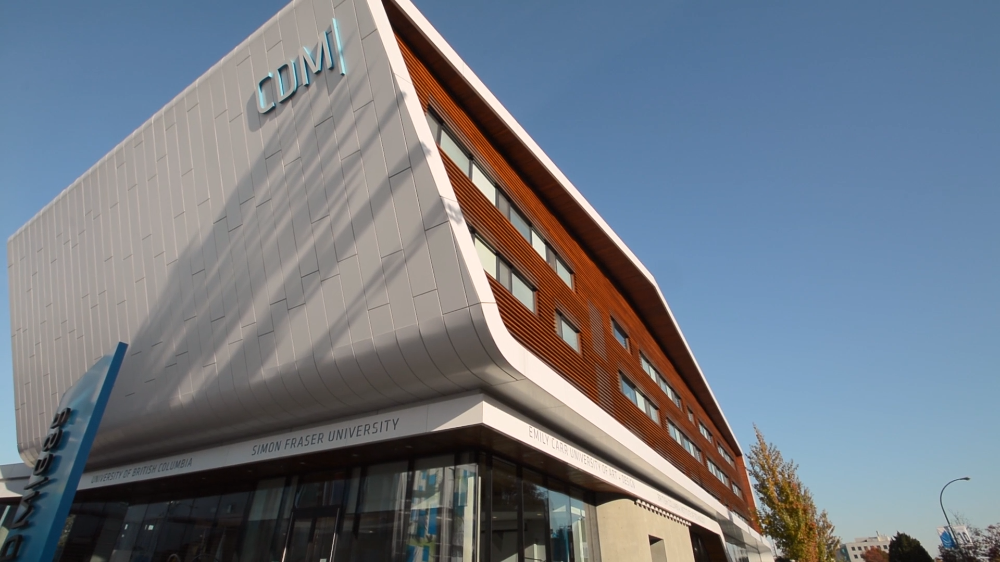
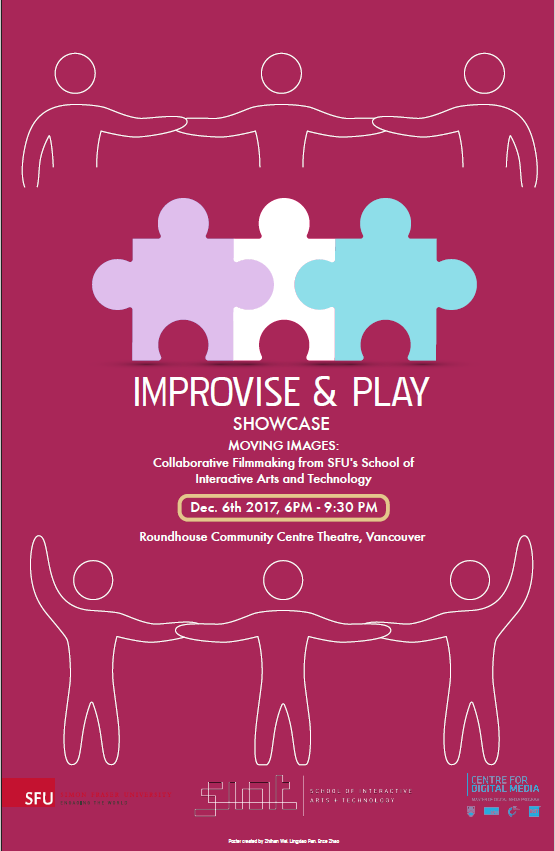

Improvise and Play Documentary
Where: Center for Digital media
Master of Digital Media (MDM) program at the Center for Digital media is a special program that aims to improve communication skills of students and professionals that are in creative industries through improvisation. I am focusing on this special method to improve communication skills and its lecturer/designer Dr. Pennefather.
My goal is presenting the effectiveness of this class and specifically Ball Game and other games help students to improve their team building and communication skills. And how these games prepare students to meet UX clients later in the week. The primary audience is students and professionals who will be inspired from the program and specifically the games. We want to express improvisation is a fun and great way to improve their communication skills in the creative industry.
How:
The improvised description and conversation from lecturer and students are creative and unique. The games themselves are also interesting to speculate and learn from. I decide to employ animation/motion graphics to present them in an interesting and fun way. The most compelling stories are Dr.Pennefather’s introduction of the games and students testimony of how these games have prepare them well and they have learned a lot.PRODUCTION TREATMENT
The documentary treatment has clearly stated the goal and visual styles of this documentary yet it was a bit vague and we need to make it more details and conduct more research to make sure our visual style is appealing to the audience. We also need to make sure there is visual consistency with overall design of Center for Digital Media.
Final Poster
Moodboard